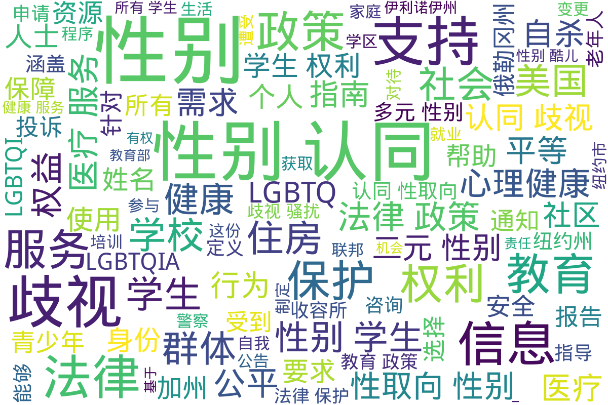

美国
Info
本目录收录了来自美国的政府及官方组织关于跨性别相关政策和法律的文件，旨在提供对跨性别者权益和法律保护的官方信息和指南。
📊 统计信息
总计内容：54 篇
标签：跨性别 政府文件 法律政策 美国
📄 文档
| 标题 ▲ | 年份 ▼ | 摘要 |
|---|---|---|
| 2013年美国反暴力项目报告_针对LGBTQ和HIV受影响人群的仇恨暴力 | 2014 | 展开
该报告由全国反暴力项目联盟(NCAVP)编写，主要关注2013年反对刘易斯、同性恋、双性恋、跨性别、酷儿及与HIV相关社区中产生的仇恨暴力。这份文件深入分析了当年针对这些群体的仇恨暴力的发生情况，展示了有关生存现状、社会环境与立法的详细数据、分析与建议。文中提到，在2013年的仇恨暴力事件中，跨性别女性和有色人种群体遭受的暴力尤为严重，尤其是12起由仇恨驱动的跨性别女性谋杀案。同时，该报告也强调了2013年一些关于权益的立法胜利，如《暴力侵害女性法》的再授权，其中首次纳入了性别认同和性取向的反歧视保护。
年份：2014 收录日期：2024-11-23 03:05:07 |
| 2015年美国跨性别调查报告执行摘要 | 2016 | 展开
《2015年美国跨性别调查报告执行摘要》是迄今为止对美国跨性别者经历进行的最大规模调查，收集了27,715名受访者在教育、就业、家庭生活、健康、住房和与刑事司法系统互动等方面的经验。调查显示，跨性别者面临严重的歧视和暴力现象，调查结果揭示了歧视和经济困难在跨性别群体中的普遍存在。例如，几乎三分之一的受访者生活在贫困中，且失业率是美国总人口的三倍。在转变过程中，受访者经历了高比例的精神健康问题，39%的受访者在调查前一个月经历了严重的心理困扰，40%的人在一生中曾尝试自杀。该报告强调了跨性别者在日常生活中面临的挑战，并呼吁政府和社会采取行动，消除对跨性别者的歧视，提供更多的资源与支持。
年份：2016 收录日期：2024-11-23 05:04:42 |
| 2016年5月13日_美国教育部和司法部_跨性别学生支持政策指导信函 | 2016 | 展开
本文件是由美国司法部和教育部于2016年5月13日发布的关于支持跨性别学生的政策指导信函。信函的目的是为全美各学校提供如何为所有学生，特别是跨性别学生，创造一个包容、安全和无歧视的环境的指导。文件首先引用了《1972年教育修正案》第九条，该条款禁止基于性别和性别认同的歧视。信函详细列出了学校在如何处理跨性别学生问题上的法律义务，包括在教育项目和活动中不得基于性别歧视，确保跨性别学生可以使用与其性别认同一致的设施（如厕所和更衣室），并允许他们参与与性别认同相符的校园活动。信函还强调了保护跨性别学生隐私的重要性，指出学校不能因为学生的跨性别身份而限制他们的教育权利。同时，文件附录提供了关于跨性别学生支持政策的最佳实践实例，以帮助学校更好地理解和实践这些法律要求。
年份：2016 收录日期：2024-11-23 05:49:15 |
| 2016年美国教育部关于跨性别学生的同事信函 | 2016 | 展开
该文件是2016年美国教育部发布的一封针对跨性别学生的同事信函，旨在提供有关保护跨性别学生权利的指导。文件中指出，学校应努力创造一个包容、安全、不歧视的环境，特别是对于跨性别学生。在信函中，教育部和司法部强调，学校在获得联邦资金的条件下，不得因性别原因对任何学生进行排斥、隔离或区别对待，并且必须遵循《教育修正案》第九条的要求。文件详细阐述了跨性别学生的权利，包括在教育环境中享有与其性别认同一致的对待，以及关于性别转变过程、名称和代词使用、性别隔离的活动和设施、隐私保护等方面的要求。文件还提到了如何处理学生教育记录中的个人身份信息，以维护他们的隐私。整个文件对跨性别学生的保护提供了明确的法规依据和政策示例，表明了教育部在推动公平教育方面的努力。
年份：2016 收录日期：2024-11-23 05:49:53 |
| 2020学生自杀预防计划与实施指南 | 2020 | 展开
该文件为《学生自杀预防计划与实施指南》，由美国某教育部门发布，旨在帮助学区制定和实施有效的自杀预防措施。指南强调，学区需要为幼儿园到12年级的学生提供全面的自杀预防计划，其中包括自杀预防、干预和风险降低的活动，以及促进自杀后康复的程序。文件中特别提到需要关注边缘化群体的需求，包括有精神疾患的青少年、经历无家可归的青年和性别认同多元的群体等，以便确保这些群体得到适当的支持与服务。文件中的政策也强调了为学校员工提供必要的培训，以便他们能够有效识别和回应潜在的自杀风险，并进行合适的转介至心理健康服务。指南要求学校制定可应对文化及语言差异的支持措施，并在年度内向社区成员提供相关信息，以提高公众对自杀预防的认识与理解。
年份：2020 收录日期：2024-11-23 04:40:05 |
| 2024年波士顿老年人需求评估报告 | 2024 | 展开
这份文件是《2024年波士顿老年人需求评估报告》，由波士顿老年服务部（Age Strong）发布，旨在调查和了解波士顿老年人的需求和优先事项。调查内容涵盖了老年人在生活中面临的多种需求，包括服务获取、负担得起的医疗护理、经济适用房、心理健康支持及LGBTQIA+支持等方面。文件中列出了多个需求类别，参与者被要求选择他们认为最重要的需求，并提供信息以帮助制定未来的支持计划。这份需求评估的目标是促进波士顿社区为各年龄段人士提供更具包容性的服务，确保所有老年人在此地能够获得适当的支持和资源。
年份：2024 收录日期：2024-11-23 03:22:20 |
| Advocate__Aurora__Health_有关提供服务时严禁歧视的通知 | 2023 | 展开
该文件是美国Advocate Aurora Health发布的有关提供服务时严禁歧视的通知。它明确规定了Advocate Aurora Health在提供服务和治疗过程中必须遵守的非歧视政策。该政策禁止因种族、肤色、国籍、年龄、性别、性取向、性别认同、宗教信仰、残障等任何原因而对任何人进行歧视。文件还提到，为了使残障人士能平等地获得服务，Advocate Aurora Health将提供多种形式的辅助服务，包括手语翻译和其他语言信息的翻译服务。文件提供了针对可能出现的歧视行为如何提出投诉的具体步骤，包括联系民权协调员和相关政府部门的信息。这份文件不仅为服务提供了保障，也为维护跨性别及其他群体的权利提供了法律支持。
年份：2023 收录日期：2024-11-02 02:40:46 |
| LGBTQIA性少数族群+咨询代表会问答_警察改革工作组 | 2020 | 展开
该文件是关于匹兹堡警察局与LGBTQIA性少数族群社区之间互动的问答记录，具体内容来自于一个警察改革工作组的会议。该会议于2020年8月24日举行，出席人员包括多位社会服务与LGBTQIA事务的专家，讨论了警察如何改善与性少数族群的关系，以及调查和执法过程中遇到的问题。自2016年12月成立的青年咨询代表会，旨在为变性人和非二元性别人群提供支持和资源，代表会首席委员Ciora Thomas等人在问答中，分享了他们在处理相关问题时的真实经历与见解。讨论中提到了性别认同与表达方面的SOGIE培训培训的必要性，以及当前警察人员在接受这些培训上存在的不足。Ciora强调了性工作者面临的困境和警察的暴力行为，指出要尊重性工作者的生命与选择，并疾呼政府应采取措施保护这部分群体不免于被定罪与伤害。与会者对警察在保护性工作者以及跨性别群体权益方面指出了现有的政策缺陷，并提出改善建议，比如建立可依赖的中立服务，确保所有警察接受适当的性别认同培训等。会议中揭示了性少数群体对警察失望的原因，背景涉及到系统性的歧视和偏见，这些看似常见的问题，通过参与者的发言得以清晰地阐述。此外，文件中还提及了社会媒体如何影响警方与性少数群体的关系，以及媒体如何在报道性工作者事件时可能造成的非人化影响。整体上，这份问答记录为理解当前社会中LGBTQIA社群与执法界的矛盾提供了重要的第一手资料，也为今后在法律与政策上改善这种状况提供了基础理论支持。
年份：2020 收录日期：2024-11-02 02:55:15 |
| MCHD_COVID_疫苗接种登记表_2022 | 2022 | 展开
该文件是MCHD COVID疫苗接种登记及预筛查表格，旨在收集接种COVID-19疫苗的个人信息。这份表格包含了身份证明、健康状况筛查、疫苗接种记录等多项内容。表格明确指出，用户需要提供姓名、年龄、出生日期及联系方式等基本信息，并在性别一栏中选择适合的选项，包括女性、男性、跨性别男性、跨性别女性、非二元性别等。这反映了对多元性别的认知与包容，同时也提供了对个人健康状况的筛查问题，确保接种疫苗的安全性和适应性。文件中提到的筛选问题包括对任何过敏反应的历史、疫苗接种后的反应以及种族和民族信息等，有助于在公共健康政策中更好地理解和解决健康差异问题。
年份：2022 收录日期：2024-11-23 04:19:52 |
| Mountain_Valley_Health_Plan_非歧视通知 | None | 展开
该文档是来自Health Plan of San Joaquin和Mountain Valley Health Plan的非歧视通知，明确表示其遵循州和联邦民权法，承诺不因性别、种族、肤色、宗教、血统、民族认同、年龄、精神残疾、身体残疾、医疗状况、遗传信息、婚姻状况、性别认同或性取向而对他人进行非法歧视、排斥或区别对待。文档详细列出了针对残疾人和非英语母语者提供的免费援助和服务，包括合格的手语翻译和多种形式的信息。文中还强调了如何提出申诉的程序，包括通过电话、信件、亲自或电子方式进行投诉。最后，文档提供了相关的联系方式，以便于受影响的人员获取帮助。此通知确保每个人都能够平等地获取医疗服务，反映出对跨性别群体及其他少数群体的重视与保护。
年份：None 收录日期：2024-11-02 02:42:29 |
| PDF_18_岁及以上登记人自我证明表_-_NYCgov | None | 展开
本文件为纽约市政府发布的《18岁及以上登记人自我证明表》说明。该表单旨在为年满18岁且希望更改出生证明上性别标示的个人提供自我证明的程序和要求，强调需要提供准确的信息以避免申请审核的延迟。表格须用英文填写，并可附上翻译版本。申请者需要提供出生证明更正申请表、有效身份证件和相应的费用支票，并在公证人面前签名。文件还特别指出，提供虚假或误导性信息将面临法律责任，且表格的性别选项除了男性(M)与女性(F)外，亦包括非二元性别(X)。本文件旨在保障跨性别者在法律上能够更好地确认和呈现自己的性别身份。
年份：None 收录日期：2024-11-07 19:51:20 |
| PDF_LGBTQI获得保障吧 | 2017 | 展开
本文件是由纽约市人力资源管理局与社会服务局发布的一份关于LGBTQI（包括跨性别者）的公共健康保险信息小册子。内容涵盖了如何申请Medicaid、基础计划（Essential Plan）和儿童健康附加计划（Child Health Plus）等公共健康保险，并强调了开放注册期间及资格事件时的购买时机。文中特别提到纽约州Medicaid已覆盖变性相关护理，并为跨性别者提供了关于如何申请变性护理服务的指导说明。文件中详细列出了申请过程中的注意事项，如通过网上、电话或面对面申请的方式，以及如何寻找对LGBTQI友好的医疗保健提供者。还提供了关于HIV及其相关医疗保障的措施，包括药物援助计划的支持和无保险者的医疗资源。总体而言，该文件为跨性别者提供了全面的医疗保险及健康服务指南，旨在确保其能够平等地获取所需的医疗服务。
年份：2017 收录日期：2024-11-07 19:52:06 |
| PDF_变性人和非二元性别客户的姓名和性别变更常见问题FAQ | 2019 | 展开
该文件是由纽约市人力资源管理局（HRA）发布的有关变性人和非二元性别客户在姓名和性别变更方面的常见问题解答（FAQ）。文档深入探讨了性别标记的选择，包括女性（F）、男性（M）和非二元（X）性别的定义及其在社交服务中的应用，并解释了在更新计算机系统之前，选择性别标记时可能遇到的限制。文件指出，选择性别是很重要的，因为某些服务（如医疗和怀孕补贴）会受到这一标记的限制。文件详细说明了如何在HRA和纽约州健康市场中变更姓名和性别所需的步骤和文件要求，包括相关的法律文件和医疗证明。最后，还提供了有关变性和非二元性别者医疗服务和权益的信息，包括医疗补助计划的相关政策和联系方式，旨在帮助客户在追求身份验证和相关健康服务的过程中获得所需的信息和支持。
年份：2019 收录日期：2024-11-07 19:51:42 |
| PDF_學校應否將學生自我性別認同對家長保密 | None | 展开
该文件讨论了加州Chino市学区的政策，要求学校在学生自我认同为跨性别者时通知家长，引发了广泛的争议和辩论。文件中指出，加州总检察长表示该政策可能违反州反歧视法和侵犯学生隐私权。教育部门强调学生的性别认同信息应受到保护，未经许可不得透露给家长，因而此政策可能使跨性别学生面临家庭暴力和被驱逐的风险。反对该政策的观点认为，学校有责任立即通知家长，因为父母有权了解孩子的情况，并在心理健康等方面给予支持。文件通过报道两方的观点，展示了当前围绕跨性别学生隐私权与家庭知情权的复杂局面，并讨论了政策执行过程中的法律和社会反响。
年份：None 收录日期：2024-11-07 19:26:37 |
| PDF_性別認同_蒙郡公立學校 | 2023 | 展开
该文档是蒙哥马利公立学校（Montgomery County Public Schools, MCPS）发布的《学生性别认同指引》，旨在为性别认同的学生提供支持和指导。文档详细列出了学校在支持跨性别及非标准性别学生方面的政策和程序，包括如何与家长沟通、学生的隐私权、对性别认同的支持计划、在校内活动中的性别融合，以及如何在体育和其他活动中确保公平性。该指南特别强调了尊重和保护所有学生的权利，致力于在一个包容性和公正的环境中促进学生的成长与成功。它还提供了多种资源，诸如心理支持热线和相关法规。文件中引用的多个重要原则和指导方针，是针对确保LGBTQ+学生在学校能够真实、安全地表达自我而设的。
年份：2023 收录日期：2024-11-07 19:47:24 |
| PDF_提供给LGBTQI_社区内的纽约市民的心理健康资源 | None | 展开
该文件是由纽约市市长办公室发布的心理健康资源指南，旨在为LGBTQI+社区的市民及其家人和盟友提供支持和信息。指南中详细列出了纽约市内能够为LGBTQI+社区提供心理健康服务的组织和项目，包括针对无家可归的年轻人、移民、难民、年长市民等特定群体的支持资源。文件还介绍了在新冠疫情期间，各种服务机构如何调整其服务模式，以便继续为需要帮助的人提供支持和咨询。内容涵盖了各种心理健康支持的类型，包括同伴支持小组、咨询和疗法、危机咨询和自杀预防服务等，并推荐了一些心理健康应用程序，帮助使用者找到合适的支持。特别强调了性别肯定护理的必要性，提供相关医疗和行为健康服务的机构信息，以及如何找到对LGBTQI+友好的专业帮助。
年份：None 收录日期：2024-11-07 19:26:57 |
| PDF_歧视性骚扰_-_OSPI | None | 展开
本文件由华盛顿州教育厅发布，主要内容是关于学生在K-12公立学校内受到的歧视性骚扰的法律保护。文中详细说明了什么是歧视、歧视性骚扰以及受保护人群的定义。根据华盛顿州法律，性别认同、性取向、性别表现等特征均受到保护，学校有责任采取措施防止此类骚扰的发生，并提供必要的保护和支持。文件还列举了歧视性骚扰的可能表现形式，包括威胁、侮辱、强迫性要求性施惠等。学校工作人员被要求在知晓可能的骚扰情况时，必须进行迅速调查并采取行动，以维护学生的权利与安全。
年份：None 收录日期：2024-11-07 19:17:04 |
| PDF_雇员的权利谁是跨性别者或非性别常规者_-_Civil_Rights_Department | 2024 | 展开
该文件由加利福尼亚州民权部发布，主要探讨了跨性别者和非二元性别者在工作场所的权利。文件内容详细说明了加州法律如何保护雇员的权利，包括使用与性别认同相符的姓名和代称。不论是否法律上更改了姓名和性别，雇员都有权在工作中使用他们选择的姓名。文件还明确禁止基于性别认同或性别表达的歧视行为，强调了雇主在招聘、晋升及工作环境中应尊重雇员的性别身份。文件中提到，所有雇员有权使用符合其性别认同的洗手间和更衣室，并且在面试过程中，雇主不可询问求职者的出生性别或性别认同历史。整体来看，该文件强调了跨性别者在职场中应享有的平等权利和法律保护，确保他们不被歧视或骚扰。
年份：2024 收录日期：2024-11-07 18:55:41 |
| PridePlace_西雅图LGBTQIA+年长者住房信息_2023 | 2023 | 展开
该文件是关于西雅图市 LGBTQIA+ 年长者住房信息的官方文件，主要介绍了 Pide Place 公寓的相关信息。这些公寓为同性恋、双性恋、跨性别者、酷儿、间性者、无性别者等群体的年长者提供可负担的平权住房。文件详细说明了公寓楼的地理位置、租金区间、建筑设施和服务，包括社区活动室、无障碍通道、宠物政策等。文件中还列出了申请资格要求、租赁申请程序、收入限制和居民权利，强调了所有申请人将受到平等对待，不论其性取向、性别认同或其他受保护身份。
年份：2023 收录日期：2024-11-23 03:49:00 |
| 《哥伦比亚特区人权法案》按执法领域划分的受保护特征 | 2023 | 展开
本文件为《哥伦比亚特区人权法案》按执法领域划分的受保护特征的详细介绍。该法案涵盖了法律中明确规定的23个受保护特征，包括年龄、肤色、残疾、家庭责任、性别认同、性取向等多项内容。每个特征的定义和相关内容都进行了详细阐述，指出了法律如何保护这些不同特征的个体，确保所有人在日常生活中的权益不受侵犯。比如，性别认同被定义为个人与性别相关的身份、外表、表达或行为，无论该个人出生时被指定为哪种性别。同时，文件还讨论了如家庭暴力、性犯罪等情境下的保护措施，强调了对有特殊需要人群的法律支持。
年份：2023 收录日期：2024-11-02 02:38:38 |
| 伊利诺伊州医疗服务非歧视指南_2020年6月26日简介 | 2020 | 展开
《伊利诺伊州医疗服务非歧视指南》旨在为伊利诺伊州居民提供在获取医疗服务时的非歧视相关法律知识与保护措施。该指南详细说明伊利诺伊州法律对抗基于性取向和性别认同歧视的政策，强调了居民在接受医疗服务、参与医疗保健计划以及获取健康保险方面的权利。文件回顾了2020年6月12日美国卫生与公众服务部颁布的规则修订情况，指出这一规则削弱了针对LGBTQ+群体的医疗保障。指南深入分析了伊利诺伊州法律（如《伊利诺伊州人权法》和《伊利诺伊州保险法》）如何保持和增强对医疗服务中的非歧视保护，包括针对跨性别者的具体保护措施。文件还介绍了如何提起歧视投诉及相关合规性问题，反映出伊利诺伊州在性别平权服务上所做的努力与其法律环境的互动。
年份：2020 收录日期：2024-11-02 02:34:27 |
| 住房歧视保护与LGBTQ+权益 | None | 展开
该文件为来自美国住房和城市发展部（HUD）的住房歧视保护与LGBTQ+权益的培训系列之一。文件详细介绍了根据联邦、州和地方的公平住房法，性取向和性别认同作为受保护特征的重要性，强调了住房提供商在提供房屋服务时不得因性取向或性别认同/表达而歧视申请者。文件中对性取向、性别认同以及性别表达做了明确的定义，并指出这些保护措施在不同时期的法律演变情况，例如，2020年最高法院的裁决与2021年HUD的备忘录对住房歧视的影响。文件还简要讨论了交叉歧视和匿名举报机制，提醒公众在受到歧视时可以保持匿名提出投诉。
年份：None 收录日期：2024-11-23 03:41:18 |
| 俄勒冈州hMPXV疫情信息与应对指南 | None | 展开
本文件为俄勒冈州公共卫生局发布的关于猴痘（hMPXV）疫情的信息与应对指南，详细介绍了猴痘的基本信息，包括病毒的起源、传播途径及其影响人群。文中指出，猴痘是一种与天花相关的DNA病毒，主要流行于中非和西非地区，并导致个人在接触感染者的皮疹、结痂或体液后可能感染。俄勒冈州的数据显示，尤其是顺性别男性和非二元性别人士是本次疫情的主要受害者。该文件讨论了症状表现及其潜在的传播渠道，包括直接接触和可能的空气传播情况。同时，文中还介绍了关于疫苗接种的信息，包括疫苗的类型（如Jynneos）及其接种策略，并强调了预防措施的重要性。文件还呼吁公众与医疗保健提供者进行沟通，以打破与猴痘相关的污名，保障每个人的健康。
年份：None 收录日期：2024-11-23 04:45:03 |
| 俄勒冈州LGBTQ+老年人健康服务需求调查 | None | 展开
该文件是俄勒冈州针对 LGBTQ+ 老年人的健康服务需求调查的介绍。调查旨在收集55岁及以上的LGBTQ+人群，包括女同性恋、男同性恋、双性恋、跨性别者以及酷儿等群体的养老、健康与服务需求信息。通过这个项目，组织希望能推动社会变革，以更好地满足老年群体的特殊需求。文件中提到参与者可以匿名填写问卷，并有机会参与100美元的礼品券抽奖，以促进更多人参与调查。文件还提供了官方网站链接和联系方式，以便获取更多信息。这一调查项目标志着对LGBTQ+老年人健康和福利的关注，将有助于描绘这一群体在社会和医疗服务中的需求与挑战。
年份：None 收录日期：2024-11-23 03:54:00 |
| 俄勒冈州健康青少年计划报告 | None | 展开
该文件是《俄勒冈州健康青少年计划报告》的PDF文档，主要针对俄勒冈州的青少年健康问题进行分析，并提出了一系列解决方案。文件指出，俄勒冈州的青少年在成长过程中需要各种支持和鼓励，以消除校园中的偏见，改善儿童身心健康，确保他们能够健康成长。为了满足这一需要，文中提到了一些措施，包括教师培训、数据监控以及与学校相关人员的协调，旨在为年轻人提供更好的教育支持，特别是那些来自黑人、原住民和有色人种（BIPOC-AI/AN）背景的学生。报告强调，必须减少传统纪律处罚，而采用更具教育性和调解性的方式，以改善青少年的健康结果并提高他们的毕业率。文件提到Healthier Together Oregon（HTO）项目旨在为所有儿童和家庭提供多层次的行为健康服务，解决结构性种族主义，消除校园不平等，并扩展健康服务的可及性。最后，HTO希望与各界合作，共同推动俄勒冈州的健康公平。
年份：None 收录日期：2024-11-23 06:18:58 |
| 加州_个人权利通知 | 2023 | 展开
该文件为《加州个人权利通知》，由美国加利福尼亚州圣贝纳迪诺县行为健康部发布，旨在告知接受物质使用障碍治疗的个人其在医疗服务中的权利。根据《健康保险可携性与责任法案》和相关法规，每个接受治疗的人都有权享受多项权利，例如保密性、获得尊严对待、避免虐待和不当行为的权利、查阅个人医疗档案的权利等。同时，该通知还详细列出了青少年和看护人的特定权利，包括信息的文化适应性、投诉和申诉程序的信息等。文件还提供了有关公民权利的背景信息，强调个人在接受医疗服务时不应受到基于种族、性别、性别认同等的歧视，并提供了投诉的具体途径和时间限制。
年份：2023 收录日期：2024-11-02 02:44:33 |
| 加州保护LGBTQ_人士的公民权利 | 2022 | 展开
该文件是关于加州保护LGBTQ+人士公民权利的法律文件。内容包括加州法律如何为每个人提供保护，免受因性取向、性别认同、性别表现等特征而遭受歧视与暴力的例子。文件中提到，如果因性别表达而遭受歧视，个人有权向公民权利局提出投诉。文件举了多种可能的非法歧视行为，如雇主因为员工的性别认同而限制其使用卫生间，或拒绝在酒店举办同性婚礼等。文件强调了对小型企业、房东及医疗提供者在保护LGBTQ+人士权利方面的重要性。
年份：2022 收录日期：2024-11-02 02:33:37 |
| 加州法律禁止收容所中所有形式的歧视和骚扰行为 | 2022 | 展开
该文件是一份关于加州法律的官方文件，重点在于禁止收容所中一切形式的歧视和骚扰行为。文中详细阐述了加州的公平住房法如何适用于所有收容所，包括紧急收容所、过夜收容所和过渡收容所。法律明确指出，收容所不应要求任何与性别认同不符的生理或医学证据，也不得因个人的性别身份、性别表现、性取向、移民身份等理由对任何申请住宿的个体进行差别对待。文中提到，收容所必须采取措施确保所有住宿者的隐私和安全，避免任何形式的非法歧视和骚扰。该文件对性骚扰的定义也进行了详细解释，强调收容所内工作人员与住宿者之间的行为必须合法合规，严重的性骚扰行为将受到法律制裁。
年份：2022 收录日期：2024-11-02 02:33:38 |
| 华盛顿州公平和民权办公室_性别表达和性别认同 | None | 展开
该文件由华盛顿州公平和民权办公室发布，主要针对K-12公立学校的学生权利，特别是在性别表达和性别认同方面的保护。文件详细阐述了华盛顿州法律对学生的权利保护，明确禁止基于性别表现和性别认同的歧视和骚扰。文中列出了性别表现和性别认同的定义，并介绍了相关术语，例如跨性别者、性别不符等。文件进一步规定了学生在学校的权利，包括使用偏爱的名字和人称代词、在学校中根据性别认同着装的权利，以及使用与性别认同相符的洗手间和衣帽间的权利。同时，文件也提出了相应的法律条款和投诉机制，保障学生的隐私权，防止歧视性骚扰，确保学生能够在一个平等和尊重的环境中学习。
年份：None 收录日期：2024-11-02 02:38:43 |
| 反对住房歧视_女同性恋经历与法律信息_2023 | 2023 | 展开
该文件为一份来自美国住房与城市发展部的公益宣传材料，旨在为多元性别及性向群体提供有关反对住房歧视的法律信息和支持资源。文中强调，由于性别认同和性倾向而遭受的住房歧视是违法的，根据《公平住房法案》，任何房东或房地产代理商都不得因性别、性别认同或性倾向拒绝提供住房机会。文件详细介绍了受害者如何投诉，并提供了相关的电话号码和网站链接，供需要帮助的人士咨询和举报。这一声明不仅反映了底层群体的生存现状和面临的挑战，也体现了法律对保护多元性别权益的承诺和积极措施。该内容特别适用于女同性恋、男同性恋、双性恋、跨性别、酷儿等群体，提供了重要的法律支持信息和指引。
年份：2023 收录日期：2024-11-23 03:05:39 |
| 哥伦比亚特区人权办公室公平住宅在线研讨会记录 | None | 展开
该文件为哥伦比亚特区人权办公室主持的公平住宅在线研讨会的记录，内容涵盖了关于住宅歧视、反歧视法律及其实施的重要信息。研讨会强调了《1968年公平住宅法》和《1977年哥伦比亚特区人权法》的重要性，提出这两项法律为多个受保护群体提供了平等的住宅权利。文中列举了住宅歧视的案例以及如何通过人权办公室提交歧视申诉的过程，说明了人权办公室的使命是消除歧视、提高平等机会并保护人权。文件详细讲解了住房和城市发展部（HUD）在公平住宅政策中的作用，强调了为包括LGBT群体提供平等住宅机会的规章制度。
年份：None 收录日期：2024-11-23 04:24:50 |
| 夏威夷州教育署_不歧视及反骚扰声明年度公告 | 2019 | 展开
这份《不歧视及反骚扰声明年度公告》是由夏威夷州教育署发布的文件，旨在确保所有学生在教育环境中获得平等的机会，特别是对于性别认同、性别表现和性取向的保护。该公告明确指出，教育署不会因种族、肤色、国籍、性别、性别认同等理由对任何人进行歧视。文中详细列出了学生在面对骚扰行为时的权利和相关程序，鼓励受害学生和家长及时举报骚扰行为。同时，文件内还提到针对那些因缺乏英语能力而可能面临入学障碍的学生，教育署将会制定相应的支持措施，以确保所有学生都可以平等参与各类职业与技术教育学习计划。公告强调了对骚扰行为的零容忍政策，包括对举报者的保护措施，确保举报者不受报复。
年份：2019 收录日期：2024-11-02 02:42:31 |
| 夏威夷州教育署Hawaii_State_Department_of_Education不 | None | 展开
该文件是由美国夏威夷州教育署发布的一份有关跨性别支持与政策的官方文件。文件内容详细描述了教育系统内对跨性别学生的支持措施，包括学校环境的包容性、性别认同的尊重、以及在校园内提供适当的医疗和心理支持等。它强调了对所有性别身份的保护，并明确列出相关法律条款及最佳实践，以促进包括跨性别学生在内的所有学生的全面发展和安全。该文件还可能包含关于教师培训、学生权益维护及相关政策更新的具体指导，以确保学校与省市教育部门之间协调一致，创造一个友好的学习环境。
年份：None 收录日期：2024-11-02 02:43:09 |
| 学生权利与责任 | 2024 | 展开
本文件为2024-25芝加哥公立学校的学生权利与责任法案（Student Bill of Rights），详细阐述了芝加哥公立学校中每位学生的基本权利和义务。文件明确指出，无论学生的性取向、性别认同、种族、年龄等特征，每个学生都有权享受免费的公立教育，并在校内外享有安全和尊严。该法案强调了教育的公平性和无歧视性，提供了关于如何保护和促进学生权利的具体指导。内容包括具体的权利条款，如获取医疗保健、表达意见、参与组织活动的自由等，也涵盖了对于违反这些权利行为的处理程序。文件还提及了与法律法规相关的条款，如根据Title IX和地方、州的法律，确保学生不受到基于性别或性别认同的歧视。
年份：2024 收录日期：2024-11-02 02:41:03 |
| 州長CUOMO_宣佈擬議法規以讓醫療補助覆蓋對跨性別者的__-_NYgov | 2014 | 展开
该文件是由纽约州州长Andrew M. Cuomo于2014年12月17日宣布的一项拟议法规的正式公告。内容主要涉及该法规如何让纽约州的医疗补助计划涵盖对跨性别者的医疗服务。根据拟议法规，激素疗法和变性手术的费用将由州医疗补助进行覆盖，这标志着纽约州在保障跨性别者健康权益方面采取了重要的进步措施。州长Cuomo在声明中指出，这一新法将确保所有纽约州居民得以公平对待，无论其性别认同如何。这项法律也与其他州的类似措施相一致，如加州和马萨诸塞州，显示出对跨性别者权益的广泛关注和支持。该文件还说明了涉及医疗专业人士的转介和患者资格标准，强调了跨性别者在医疗服务中享有权利的重要性。
年份：2014 收录日期：2024-11-07 19:43:09 |
| 康涅狄格州教育委员会性别认同反歧视决议_2022 | 2022 | 展开
该文件是由康涅狄格州斯托宁顿教育委员会于2022年10月25日通过的一项关于性别认同、性别表达和性取向反歧视的决议。决议明确指出每个孩子，无论其性别认同、性别表达或性取向如何，都有权接受免费的公立K-12教育，并强调学区有责任为所有学生创造一个安全的学习环境。文件指出，康涅狄格州禁止基于性别认同和性取向的歧视，并提到美国最高法院在Bostock诉克莱顿县一案中确认性别歧视包括对性别认同和性取向的歧视。决议还承认LGBTQ+学生在学校遭受欺凌和骚扰的现状，以及这对他们的心理健康和教育成就的负面影响。为此，学区决定采取措施禁止基于性别认同和性取向的歧视，并宣称学区为学生提供一个安全空间，鼓励教师和员工支持多样性并庆祝不同身份。
年份：2022 收录日期：2024-11-23 04:39:30 |
| 康涅狄格州教育部_多元性别学生权利保护指南_2024 | 2024 | 展开
该文件是由美国康涅狄格州教育部门发布的《多元性别学生权利保护指南》，旨在指导学校如何为跨性别或多元性别的学生提供平等的教育机会与支持。文件中详细探讨了多元性别学生的权利，包括如何识别性别身份、尊重名字和代词的使用，以及保障学校环境的安全与包容性等内容。同时，文件强调了根据康涅狄格州及联邦法律，学校必须为所有学生提供无歧视的学习环境，针对性别身份或表达展开的干扰行为，学校应及时有效地进行处理。文件还对“性别认同”、“性别表达”等专业术语进行了定义并说明，如“性别流动者”指在性别身份和表达上展示灵活性的人。文章最后补充了性别焦虑的定义及其在教育环境中的影响。
年份：2024 收录日期：2024-11-23 04:34:31 |
| 怀亚特诉科特克案件和解协议通知 | 2024 | 展开
该文件是美国俄勒冈州地区法院关于怀亚特诉科特克案的和解协议通知，案件编号为6:19-cv-00556-AA。文件详细说明了此案件的背景、原告和被告的身份以及和解的具体内容和要求。文件提到，这起诉讼涉及的是一群在俄勒冈州儿童福利系统中的居民，尤其是那些处于寄养或合法监护下的儿童和青少年。这项和解协议旨在保护儿童的合法权利，要求被告提供一系列改进措施，以减少在寄养系统中儿童遭受的虐待、提高服务质量和效率等。该文件还明确了集体诉讼的概念，解释了如何参与和反对和解协议的程序，并提供了法律反馈的渠道。
年份：2024 收录日期：2024-11-23 03:37:50 |
| 新泽西州反歧视法指南 | None | 展开
该文件为《新泽西州反歧视法指南》的一部分，主要介绍了新泽西州法律对基于性倾向和性别认同或表达的歧视行为的禁止条款。文件指出，新泽西州反歧视法（LAD）禁止在就业、住房及公共设施中针对实际或感知的性倾向、性别认同或性别表达的歧视和骚扰。具体内容包括雇主和房东在雇用、解雇及员工福利（如医疗、家庭假）等决策中不得基于LGBTQI身份或性别刻板印象进行差别对待。文件强调，跨性别者应被允许按照其性别认同或表达使用洗手间和更衣室，并有权选择他人称呼自己时所使用的名字和代词。这一法律的出台期望为LGBTQI群体提供一个反歧视的法律保护框架，确保他们在社会生活中获得公平和尊重。文件中还提到如果雇主或公共场所在未采取足够措施制止骚扰的情况下被知晓，可能会面临法律责任。
年份：None 收录日期：2024-11-23 06:13:22 |
| 旧金山安全住房社区需求评估报告 | None | 展开
该文件为《旧金山安全住房：社区需求评估报告》，由安全住房联盟编制。本报告详细分析了旧金山无家可归者和支持性住房局（HSH）在为家暴、性侵害和人口贩卖幸存者提供安全住房服务方面的现状和挑战。通过对社区需求的评估，报告总结了现行住房选择的不足、协调入住流程的复杂性，并对幸存者的特殊需求进行了深入探讨。
报告中提到，许多幸存者在寻求安全住房时面临重重困难，其中包括住房库存不足、服务缺乏和协调机制不健全等问题。旧金山的情况表明，约有22%至57%的女性经历过无家可归，且其背后的原因主要与家暴相关。报告强调了针对LGBTQ+、有色人种等边缘群体面临的多重障碍，以及在社区内创建安全、有保障的住房选择的重要性。文中引用多位幸存者和社区工作者的经历，呼吁各方共同努力改善现有体系，以更好地满足幸存者的需求。
年份：None 收录日期：2024-11-23 04:00:40 |
| 民权办公室_–_美国卫生与公众服务_非歧视公告 | 2023 | 展开
该文件是一份非歧视公告，由Orange County Mental Health and Recovery Services发布，内容涉及对各类歧视行为的拒绝，包括性别、种族、肤色、宗教信仰、国籍、年龄、身体和精神残疾、社会性别及性取向等多种因素。公告强调，任何人都不会因上述因素而受到非法歧视或排斥。文件中提供了多种服务的信息，包括为残疾人士提供的沟通帮助服务，如合格的手语翻译、其他格式的信息（大字版、盲文版、音频版等）以及针对英语非母语人士的语言服务。
年份：2023 收录日期：2024-11-02 02:43:36 |
| 波特兰公立学校_学生自杀预防政策_2019 | 2019 | 展开
本文件是关于波特兰公立学校（Portland Public Schools）针对学生自杀预防政策的官方文档。文件详细阐述了学校面对青少年自杀问题的严重性，并制定了一系列预防和干预措施，以保障学生的心理健康。本政策是响应于2017年一名跨性别学生Adi Staub自杀身亡事件的倡议所制定的，旨在通过建立一个支持性环境，减少自杀风险。文中提到的政策要求教育机构在全校范围内实施自杀预防干预措施，特别关注包括LGBTQIA+群体在内的高风险学生。政策内容包括教职员工的培训、青少年自杀教育、学校预防自杀计划的执行，以及家庭和社区的参与。该政策还强调了对于有自杀风险的学生提供必要的心理健康服务与支持的重要性。
年份：2019 收录日期：2024-11-23 06:21:59 |
| 波特兰公立学校学生登记表_2018 | 2018 | 展开
该文件为波特兰公立学校的学生登记表，修订日期为2018年9月6日。该登记表旨在收集学生的基本信息，包括法定姓名、性别（包含性别酷儿选项）、出生日期和地址等信息。文件详细说明了家庭信息、语言使用状况以及特殊医疗需求等内容，确保学校能够为每位学生提供适当的支持与服务。文件中强调了多样性的重要性，尤其是对不同性别身份的认可，鼓励家长在填写信息时提供真实和完整的数据，以便学校为所有学生营造一个包容的环境。
年份：2018 收录日期：2024-11-23 06:21:22 |
| 纽约市___NYC__LGBT健康提示 | None | 展开
该文件为纽约市（NYC）卫生局发布的跨性别人士健康提示手册，旨在为跨性别、非常规性别和非二元性别人士提供健康支持和资源。手册涵盖了性别确认及医疗保健的相关信息，包括初级护理、性健康、自我护理以及社区联系等内容。文件详细阐述了在医疗保健场所中，跨性别人士的合法权利，强调因性别认同或表现而遭受歧视的行为是非法的。手册还提供了多种医疗资源、心理健康支持和法律服务信息，旨在帮助跨性别人士获得必要的医疗和社会支持。
年份：None 收录日期：2024-11-02 02:43:32 |
| 美国卫生与公众服务部-_机构公平行动计划 | None | 展开
该文件是由美国卫生与公众服务部发布的《机构公平行动计划》，主要目的是促进包括跨性别群体在内的所有人群在医疗和公共服务中的平等对待和反歧视。尽管我们无法提取PDF内容，但文件通常包含对跨性别个人在健康服务、社会保障、法律保障等方面权益的维护措施。同时，该行动计划可能涉及如何消除制度内对跨性别者的歧视，推动相关政策的实施以支持这一群体的健康和福祉。该文件的内容应旨在加强跨性别者的法律保障，改善他们的生活质量，并提高整体社会对性别多样性的认识和接受度。
年份：None 收录日期：2024-11-02 02:42:24 |
| 美国外出生的舞蹈从业人员调查报告 | None | 展开
该文件是一份关于美国外出生的舞蹈从业人员的调查报告，旨在通过收集和分析数据，了解在美国舞蹈行业中工作外籍舞蹈者的情况。这份调查报告包括了舞者的背景信息、他们在美国的工作经历、以及在舞蹈行业中面临的挑战与机遇。文件中详细列出了各种舞蹈形式的从业者，包括芭蕾、现代舞、街舞等，以及他们的文化背景和对舞蹈行业的贡献。报告还讨论了美国政策对外籍舞者工作的影响，以及跨性别和多元性别舞者面临的特殊挑战和经验，为理解这个群体的生存状态提供了宝贵的数据支持和见解。
年份：None 收录日期：2024-11-23 05:45:48 |
| 美国平等就业机会委员会_职场歧视是违法的 | 2023 | 展开
该文件是由美国平等就业机会委员会（EEOC）发布的宣传材料，旨在帮助人们了解其在职场中的权利，特别是针对就业歧视的相关法律。文件中明确指出，职场歧视是违法的，包括基于种族、肤色、信仰、性别、性取向、性别认同、国籍等原因的歧视。EEOC负责执行联邦法律，以保护现任或前员工、教育机构、工会及就业申请人等领域的人免受各种形式的就业歧视。文件详细列举了不同类型的歧视及其可能的情境，如招聘、晋升、薪酬、解雇等方面。它还强调了受保护的群体，特别是残障人士和退伍军人，讨论他们的权利及获得合理便利的情况。最后，文件提供了联系EEOC的各种方法，鼓励受歧视的个体及时提出投诉，以维护自己的合法权益。
年份：2023 收录日期：2024-11-02 02:41:29 |
| 老龄化总体规划公众调查报告_纽约州_2023 | 2023 | 展开
该文件是纽约州老龄化总体规划的公众调查报告，名为“绘制蓝图”（Master Plan for Aging, MPA）。它旨在制定一份战略蓝图，以确保所有纽约民众无论年龄，都能够过上充实、健康、尊严和独立的生活。调查内容涉及纽约居民的生活条件、护理和服务需求，以及希望在老龄化服务中解决的重点领域。通过问卷的形式，调查收集了社区成员对交通、歧视、医疗支持、生活成本等方面的反馈，旨在为政策制定提供信息。这份问卷还探讨了社区成员在老龄化过程中面临的挑战和希望获得的服务，从而帮助政府部门更好地了解和满足人口的需求。
年份：2023 收录日期：2024-11-23 06:15:05 |
| 联邦合同遵循项目办公室_性取向及性别认同歧视 | 2016 | 展开
该文件是由美国联邦合同遵循项目办公室（OFCCP）发布的有关性取向及性别认同歧视的权益说明。文件中明确阐述了个人在职场中享有的与性取向和性别认同相关的权利，以及如何保护自己免受歧视。内容包括对性取向和性别认同的定义，以及OFCCP所包含的保护对象。文件指出，雇主不得因员工或求职者的性取向或性别认同而拒绝其就业，或对其进行骚扰、降职等行为。文中还提供了投诉的程序，包括在线填写表格、亲自递交或邮寄的方式。OFCCP会协助因性取向和性别认同受到歧视的个人，确保他们的权利受到保护。
年份：2016 收录日期：2024-11-02 02:41:18 |
| 肤色国籍年龄身心障碍或性别 | None | 展开
该文件是关于Finger Lakes Community Health（指湖社区健康中心）的民权政策，明确表示该中心遵守适用的联邦民权法，不因种族、肤色、国籍、年龄、身心障碍或性别（包括性取向和性别认同）而对任何人进行歧视或不公对待。文件中提到该中心为身心障碍人士提供合理的便利和免费的辅助工具，以便进行有效沟通，比如手语翻译和其他格式的书面信息。文件还提供了为非英语使用者提供语言支持的信息，包括合格的口译员和用其他语言书写的信息。信中也指出了如您认为遭遇歧视，可以通过该中心的文化能力项目经理或美国卫生与公众服务部民权办公室提出申诉的途径。整体来看，该文件强调了在医疗服务中保障所有人平等权利的重要性，并提供了相关投诉与支持的联系信息。
年份：None 收录日期：2024-11-02 02:43:04 |
| 芝加哥_性别认同歧视 | None | 展开
该文件探讨了性别认同歧视的现象，并提供了详尽的案例与处理建议。文件中明确指出，性别认同歧视是指基于个人性别认同的任何行为，包括但不限于在卫生间、工作场所及租赁房屋等场合遭受的歧视与骚扰。具体示例包括禁止他人选择使用的卫生间或更衣室、对客户的性别认同进行嘲笑与贬低，以及因性别认同被拒绝雇佣、晋升或公平对待。为保护自身权益，文件呼吁遭受歧视的人士及时举报，并提供了有关举报的联系方式和相关组织信息。
年份：None 收录日期：2024-11-02 02:40:50 |
| 變性人與非二元性別者姓名性別變更常見問題_NYCgov_2019 | 2019 | 展开
该文件为2019年美国纽约市政府人力资源管理局发布的有关变性人和非二元性别者姓名和性别变更的常见问题解答手册。文中详细解答了多个与姓名和性别改正相关的重要问题，包括可供选择的性别选项（例如F、M和X），性别选择的重要性，如何变更记录中的性别及姓名，以及可能影响医保的各类规定。文件中还提及如何申请医疗服务的保险给付。该手册涵盖了变性人和非二元性别者在申请社会服务过程中的权利和资源，强调了对个人信息保密的重要性，并提供了联系相关机构以获取更多信息的方式。此文件旨在为变性人和非二元性别者提供清晰的指导，帮助他们顺利完成所需的姓名及性别变更，确保享有平等服务与保障。
年份：2019 收录日期：2024-11-23 06:16:12 |
| 道格拉斯县学区-_教育公平 | 2021 | 展开
《道格拉斯县学区教育公平政策》文件详细描述了道格拉斯县学区教育委员会在促进教育公平和包容性方面的承诺。该文件强调，学区将致力于创造一个包容的文化，确保所有学生、员工和社区成员在教育和工作环境中感到安全和受重视。文件中提到，学区的政策将涵盖不分种族、肤色、性别、性取向、性别表达和其他身份特征等方面的公平教育机会；同时，学校还需承担消除偏见、不公平和排外行为的责任。教育委员会将建立和维持公平咨询委员会，以支持政策实施，并制定具体的标准和指标，衡量在公平、多样性、包容性与无障碍方面的成就。该文件的法律基础包括1972年教育修正案第九章和1974年平等教育机会法等相关法律条款，为学区的政策增添法律支持。
年份：2021 收录日期：2024-11-02 02:38:56 |
| 马里兰州蒙哥马利县制止仇恨 | 2021 | 展开
该文件是马里兰州蒙哥马利县检察官办公室发布的仇恨犯罪受害者资源指南，内容涵盖了受害者赔偿和支持服务，以及如何报告仇恨犯罪和偏见事件的信息。文件提到了合适的联系电话和资源网站，如仇恨暴力受害者合作基金、州检察官办公室、法律援助以及关于仇恨犯罪和偏见事件的相关法律条款。这些资源旨在保护所有居民，特别是受仇恨犯罪影响的少数群体，包括性别认同和性取向等。文件解释了什么构成仇恨犯罪与偏见事件的区别，强调了举报重要性的同时，提供了具体的法律后果和受害者可以获得的服务。
年份：2021 收录日期：2024-11-02 02:43:17 |
📊 词云图

- 5 访问 PDF_提供给LGBTQI_社区内的纽约市民的心理健康资源
- 3 访问 Advocate__Aurora__Health_有关提供服务时严禁歧视的通知
- 3 访问 PDF_变性人和非二元性别客户的姓名和性别变更常见问题FAQ
- 2 访问 LGBTQIA性少数族群+咨询代表会问答_警察改革工作组
- 2 访问 老龄化总体规划公众调查报告_纽约州_2023
- 1 访问 2015年美国跨性别调查报告执行摘要
- 1 访问 PDF_雇员的权利谁是跨性别者或非性别常规者_-_Civil_Rights_Department
- 1 访问 PridePlace_西雅图LGBTQIA+年长者住房信息_2023
- 1 访问 夏威夷州教育署Hawaii_State_Department_of_Education不
- 1 访问 波特兰公立学校学生登记表_2018
自动生成说明
目录及摘要为自动生成，仅供索引和参考，请修改 .github/ 目录下的对应脚本、模板或对应文件以更正。